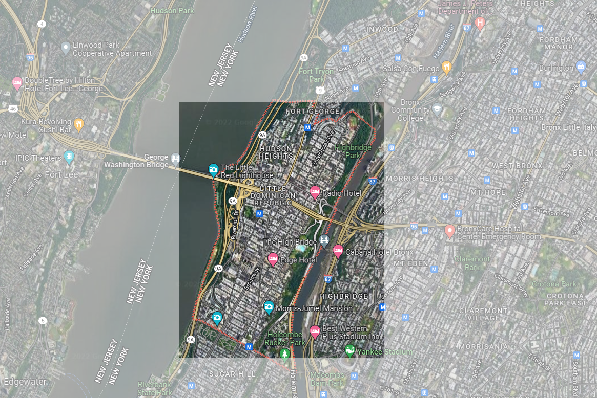

Washington Heights is part of Manhattan Community District 12, and its primary ZIP Codes are 10032, 10033, and 10040. In 2019, there were an estimated 204,096 people in Washington Heights/Inwood, of which 2.5% of the population identified as Asian, 7.9% identified as Black, 67.9% identified as Hispanic, and 19.2% identified as white.
If we were to let our 3 neighborhoods, Hell’s Kitchen, Washington Heights, and StuyTown, be representative of the entire Manhattan Borough, our ranking would go as follows. In terms of schooling, with schools like Stuyvesant High School, the Anderson School, the New Exploration into Science, Technology and Math School, and Hunter College High School, Manhattan is not limited to its very specialized schools. For this reason, we give Manhattan an A rating for schooling. In terms of crime and safety, we give Manhattan a B rating. Within our three neighborhoods, there was an average of roughly 1600 violent crimes and 3600 property crimes committed a year. Manhattan is not the safest place, but it’s also not the most dangerous. In terms of housing, we give Manhattan a D rating. Manhattan is notorious for being extremely expensive. The median rent between all three of our neighborhoods ranged from $2500 a month to nearly $3000 a month. This sort of price is not affordable for a majority of people. The fact that 86% of people rent instead of own in specifically Hell’s Kitchen, also goes to show how expensive living in Manhattan is. In terms of nightlife, we give Manhattan an A- rating. There are plenty of theaters, bars, restaurants, and other outgoing places to go to in the city. Manhattan has a very vibrant nightlife.
When looking at the total percentage that Extremely Low Income Units, Very Low Income Units, and Low Income Units make up of all unit types of a borough, Manhattan has the lowest percentage with 73.1%, while Staten Island has the highest percentage with 93.5%. Queens has the second lowest percentage with 78.4%. Then is Brooklyn with 83%, and then finally, the Bronx coming at 93.1%. According to this data, we can conclude that Staten Island is the most affordable borough, with the Bronx coming at a close second, while Manhattan is the most expensive borough. In terms of the type of crimes that are committed in each borough, every borough has roughly the same percentage of each type of crime being committed. For every borough, misdemeanors are the overwhelming majority type of crime being committed, then felonies, and then violations. For this reason, we would say that there is no correlation between the affordability of housing in a borough and the types of crime that are committed. Although percentage wise, the types of crime being committed are relatively the same, there is a clear difference between the frequency of crimes being committed. In order of least total crimes to most total crimes, the order goes Staten Island, Queens, Bronx, Manhattan, and then Brooklyn. It’s interesting to see that from our previous analysis, Staten Island was the most affordable borough, and from this analysis, it is also the safest borough. Meanwhile, Manhattan was the most unaffordable borough, and it is the second most dangerous borough. There isn’t really a clear connection between affordability and crime rate for the other three boroughs.